📖 ЛЕКЦИЯ 1. ВВЕДЕНИЕ В FIGMA: ОСНОВЫ ДИЗАЙНА ИНТЕРФЕЙСОВ
- Определение Figma, история создания и область применения
- Интерфейс программы: панели, инструменты, рабочая область
- Работа со слоями и фреймами. Понятие компонентов и вариантов
- Стили и сетки. Создание адаптивного макета
- Прототипирование и связи между экранами
- Совместная работа и передача макета верстальщику
1. Определение Figma, история создания и область применения
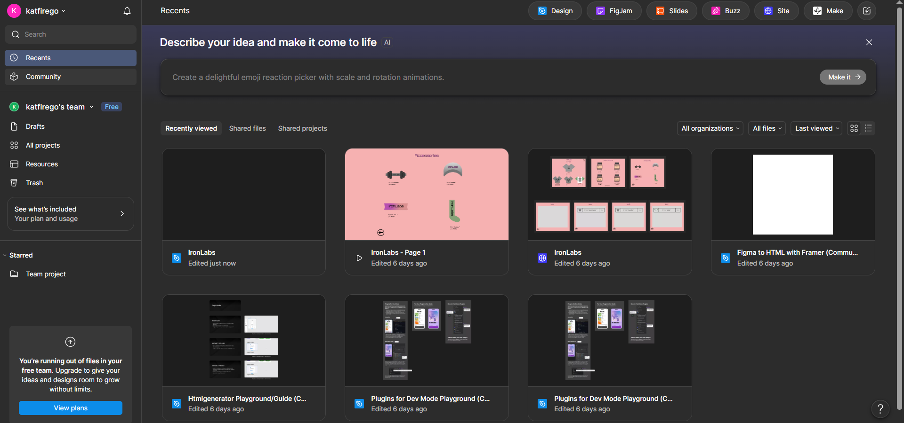
Figma — это векторный графический редактор для проектирования интерфейсов, который работает прямо в браузере. В отличие от Photoshop или Adobe XD, Figma не требует установки и позволяет нескольким дизайнерам одновременно работать над одним файлом.
Создатели Figma — американские разработчики во главе с Диланом Филдом. Первая версия была выпущена в 2016 году. Основная идея: сделать дизайн доступным для команд, избавиться от проблемы «скинул макет в ZIP» и хранить всю историю изменений в облаке.
Ключевая область применения: веб-дизайн, мобильный дизайн (iOS/Android), создание прототипов, дизайн презентаций и векторных иллюстраций.
2. Интерфейс программы: панели, инструменты, рабочая область
- Toolbar: инструменты для фигур, текста, комментариев, перо.
- Layers: иерархия объектов (аналог HTML-дерева).
- Canvas: бесконечное полотно для фреймов.
- Right Sidebar: шрифты, отступы, цвета, тени (будущий CSS).
- Assets: переиспользуемые компоненты.
3. Работа со слоями и фреймами. Понятие компонентов и вариантов
Фрейм (Frame) — аналог body или div в HTML.
Компоненты (Components) — киллер-фича: Ctrl + Alt + K.
Варианты (Variants) объединяют состояния (обычная, hover, неактивная).
4. Стили и сетки. Создание адаптивного макета
Стили: палитра цветов и текстовые стили (экспорт в CSS).
Сетки (Layout Grids): Grid и Columns.
5. Прототипирование и связи между экранами
- Переключитесь на вкладку Prototype
- Кликните элемент → перетащите «молнию» на другой фрейм
- Настройте триггер и анимацию
6. Совместная работа и передача макета верстальщику
Dev Mode: показывает CSS-свойства элемента.
Экспорт ассетов: PNG для сложных, SVG для иконок.
Спецификации: зажмите Alt — расстояние до элементов.
margin: 24px.
Вывод
Вы познакомились с Figma, изучили интерфейс, фреймы, компоненты, варианты, Auto Layout и сетки. Понимание этих принципов позволяет дизайнеру и разработчику говорить на одном языке.
🛠️ ПРАКТИКА 1. ЗНАКОМСТВО С FIGMA И ПЕРВЫЙ МАКЕТ
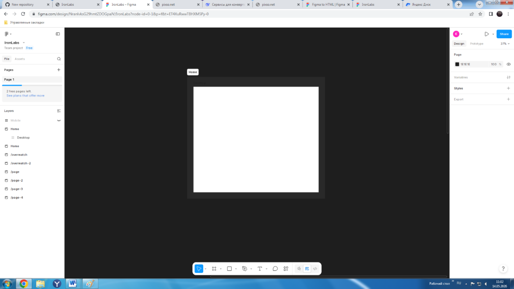
🎯 Цели:
- Создавать и настраивать фреймы
- Освоить Auto Layout
- Создавать компоненты и варианты
- Стилизировать текст/цвета под CSS
- Строить прототипы и экспортировать ассеты
📋 Задания:
- Зарегистрируйтесь в Figma, создайте файл «Мой первый дизайн-система».
- Создайте фрейм 1440×1024 px (клавиша F → Desktop).
- Создайте прямоугольник (R) шириной на весь фрейм, высотой 80 px. Цвет
#2C3E50(шапка). - Добавьте логотип «Мой Бренд» (T), цвет
#FFFFFF, 24px, Bold. Отступ слева 40px. - Создайте три пункта меню. Разместите справа с отступом 40px, цвет
#FFFFFF, 16px, gap: 30px (Shift + A → Auto Layout). - Создайте фрейм 1200×600 px, выровняйте по центру через Auto Layout родителя (Justify: Center).
- Внутри создайте H1 «Дизайн, который превращается в код» (48px,
#2C3E50) и абзац 18px (#7F8C8D). Auto Layout, вертикаль, gap: 20px. - Создайте кнопку (200×50px, radius 8px,
#3498DB). Текст «Начать проект». Тень:X:0, Y:4, Blur:6, rgba(0,0,0,0.1). - Создайте компонент «Карточка товара»: 300×400px, radius 12px, белый, тень. Внутри: заглушка, заголовок, цена, кнопка.
Ctrl + Alt + K→ «ProductCard». - Создайте 3 экземпляра. Разместите в ряд через Auto Layout, gap: 30px.
- Измените исходный компонент. Убедитесь, что все обновились. Измените текст в одном — он переопределится.
- Создайте вариант кнопки: Property «State» → «Default» / «Hover». Для Hover: фон
#2980B9, тень больше. - Создайте цветовую панель: 5 квадратов 50×50px. Выделите каждый → иконка 4 точек → «Create style».
- Создайте текстовые стили: H1 (48px Bold) → typography/h1. Абзац (16px) → typography/body.
- Настройте сетку: 12 колонок, Gutter 20px, Margin 40px.
- Прототип: соедините кнопку с фреймом «Спасибо за заявку». Анимация: Push → Left → 300ms.
- Добавьте переход на «Спасибо» → «На главную» с Dissolve 200ms.
- Экспортируйте иконку корзины в SVG, масштаб 1x.
- Включите Dev Mode. Выпишите CSS-свойства кнопки.
- Экспортируйте спецификации: «Copy as CSS».
📐 ЛЕКЦИЯ 2. ФРЕЙМЫ, СЕТКИ И КОМПОЗИЦИЯ: УЧИМСЯ ВЕРСТАТЬ ЭКРАНЫ
1. Фреймы как основа макета. Отличие фрейма от группы
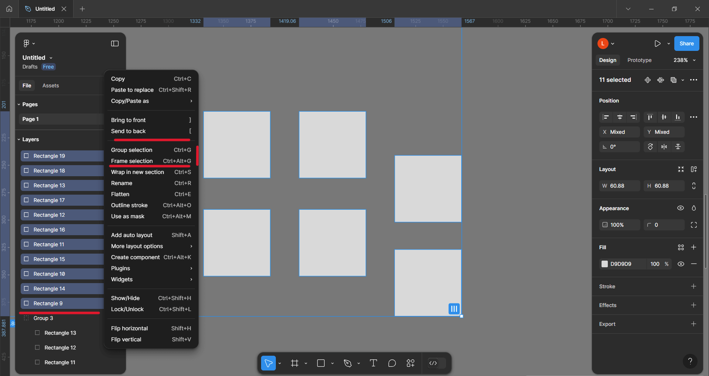
Фрейм — аналог body/div. В нём можно задать фон, скролл, сетку.
Отличие от группы: Фрейм имеет структуру слоёв, сетку, Auto Layout и свойство Clip content. Группа — просто логическое объединение. Всегда используйте фреймы для экранов и крупных блоков.
2. Сетки в Figma: Grid, Columns, Rows
Сетка помогает выравнивать элементы. Выделите фрейм → Layout Grid → плюс.
- Grid: ячеистая сетка (как CSS Grid).
- Columns: колоночная сетка. Самый популярный тип (12 колонок для веба, 8 для мобильных).
- Rows: строчная сетка (реже).
3. Настройка отступов и полей (Margin, Gutter)
Count: кол-во колонок. Gutter: расстояние между ними (gap в CSS). Margin: отступы от края фрейма (padding контейнера).
Пример для десктопа: Count=12, Gutter=20px, Margin=40px. Для мобильного (375px): Count=4, Gutter=16px, Margin=16px.
4. Композиция интерфейса: группировка и выравнивание
Принципы хорошей композиции: Близость, Выравнивание, Контраст, Пространство.
5. Ограничения и адаптивность фреймов
Constraints: указывают поведение при изменении размера фрейма (Left/Top, Right/Bottom, Center, Left & Right).
Создайте фреймы под Desktop, Tablet, Mobile и адаптируйте вручную.
🛠️ ПРАКТИКА 2. ФРЕЙМЫ, СЕТКИ И КОМПОЗИЦИЯ
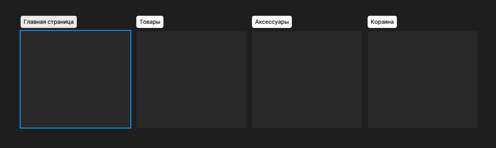
- Создайте фрейм 1440×1024 px.
- Настройте сетку Columns: 12 колонок, Gutter 20px, Margin 40px.
- Создайте Grid: размер ячейки 20×20 px, Count = 50. Прозрачность 20%.
- Нарисуйте три прямоугольника шириной в 4 колонки каждый. Используйте Snap to grid.
- Создайте header: ширина на весь фрейм, высота 80px. Constraints: логотип — Left, навигация — Right.
- Создайте sidebar шириной 300px слева. Constraints: Left + Top + Bottom.
- Создайте плавающую кнопку «Наверх» в правом нижнем углу. Constraints: Bottom + Right.
- На фрейме Mobile создайте карточку товара шириной на весь экран (Fill). Constraints: Left & Right для изображения.
- Создайте вайрфрейм главной страницы интернет-магазина: шапка, баннер, сетка карточек 3×3, подвал.
- Создайте форму регистрации из трёх полей и кнопки. Разместите по центру фрейма.
- Скопируйте Desktop во фрейм Tablet. Адаптируйте: уменьшите отступы, измените количество колонок с 3 на 2.
- Создайте компонент «Адаптивная карточка» с Wrap в Auto Layout.
- Создайте галерею изображений 4×3. Используйте Grid для точного позиционирования.
- Создайте навигационное меню с выпадающим списком (dropdown).
- Создайте футер из трёх колонок: контакты, ссылки, соцсети. Justify = Space between.
- Создайте карточку профиля: аватар (круг), имя, должность, кнопка «Подписаться». Center по обеим осям.
- Создайте сетку из 6 карточек с разной высотой. Align = Stretch.
- Скопируйте Desktop и измените ширину на 1920 px. Проверьте Constraints.
- Создайте страницу блога: слева — список постов (300px, фиксированная), справа — Fill.
- Создайте дашборд с графиками и метриками. Columns для контента, Grid для графика.
🖌️ ЛЕКЦИЯ 3. ВЕКТОР И ТИПОГРАФИКА: СОЗДАНИЕ ГЕОМЕТРИИ И ТЕКСТА
1. Векторная графика: фигуры и перо
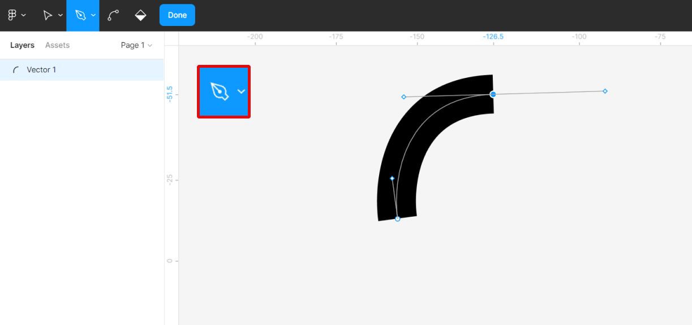
Figma — векторный редактор. Инструменты: Rectangle (R), Ellipse (O), Line (L), Arrow, Polygon, Pen (P). Pen позволяет рисовать произвольные контуры и кривые Безье.
2. Работа со слоями: заливка, обводка, эффекты
- Fill: сплошной цвет, градиент, изображение.
- Stroke: толщина, цвет, пунктир (Dash/Gap).
- Effects: Drop shadow, Inner shadow, Layer blur, Background blur.
3. Типографика
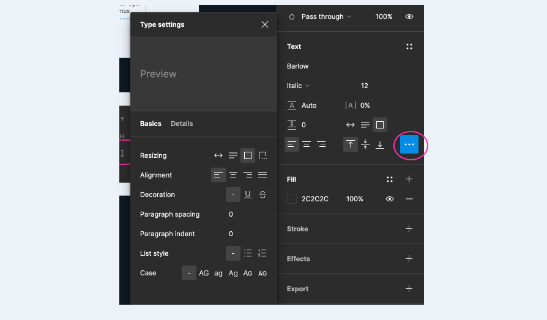
Настройки текста: Font family, weight, size (px), Line height, Letter spacing, цвет. Выравнивание, переносы, декорация, регистр. В Figma текст остаётся текстом до экспорта.
4. Текстовые стили и пары шрифтов
Текстовые стили — сохранённые наборы параметров (как CSS-классы). Пары шрифтов: один для заголовков, другой для текста (напр. Playfair Display + Source Sans Pro).
🛠️ ПРАКТИКА 3. ВЕКТОР И ТИПОГРАФИКА
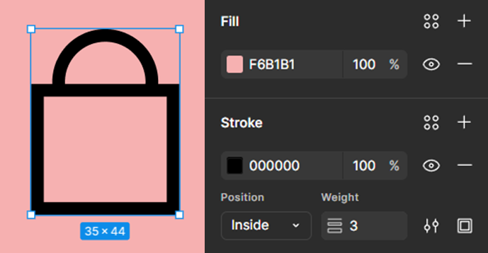
- Создайте фрейм 1440×1024 px.
- Нарисуйте квадрат 200×200 px, залейте синим, скругление 16px.
- Нарисуйте круг 150px, залейте оранжевым.
- Нарисуйте треугольник, залейте зелёным.
- Линия 300px, толщина 4px, пунктир.
- Пером нарисуйте сердечко, залейте красным.
- Скопируйте сердечко, добавьте Drop Shadow.
- Карточка 300×400px, белая, обводка 1px, тень.
- Внутри заголовок (Inter 20px Bold), цена (24px SemiBold), описание (14px Regular, line-height 1.5).
- Выровняйте текст, задайте отступы.
- Создайте текстовые стили (typography/title, price, caption, h1, body).
- Создайте иконку корзины, экспортируйте в SVG (1x).
- Экспортируйте карточку в PNG (2x).
- Создайте кнопку «Купить», выровняйте текст.
- Три варианта иконки «лупа»: контур, серая заливка, градиент.
🧩 ЛЕКЦИЯ 4. КОМПОНЕНТЫ И VARIANTS: КАК УСКОРИТЬ РАБОТУ В 10 РАЗ
1. Мастер-компонент и экземпляры
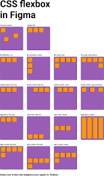
Компонент — переиспользуемый элемент. Мастер хранится в Assets. Экземпляр — копия с тонкой фиолетовой рамкой.
Преимущества: экономия времени, единый стиль, упрощение передачи разработчику.
2. Создание и использование
Создание: Ctrl + Alt + K. Использование: через Assets или копирование. Храните мастера на отдельной странице «UI Kit».
3. Переопределение свойств (Override)
Можно менять текст, цвет заливки, видимость, скругления. Нельзя менять структуру слоёв без разделения.
4. Variants: объединение состояний
Объединяют несколько состояний (Default, Hover, Disabled). Свойства: «State», «Size», «Icon». Один компонент заменяет 27 отдельных.
🛠️ ПРАКТИКА 4. КОМПОНЕНТЫ И VARIANTS
- Создайте фрейм Desktop.
- Нарисуйте кнопку 200×48px, скругление 8px.
- Создайте компонент «Button/Primary».
- Создайте 3 экземпляра, разместите с gap 20px.
- Измените текст в экземплярах (Купить, Добавить, Оформить).
- Измените мастер-компонент, убедитесь в обновлении копий.
- Создайте «Button/Secondary» (прозрачная, серая обводка).
- Создайте компонент «Card» (300×400px, тень, внутри заглушка, заголовок, цена, кнопка).
- 3 экземпляра Card, измените заголовки.
- Переопределите цвет кнопки в одном экземпляре.
- Создайте Variants для кнопки: Default, Hover, Disabled.
- Переключайте State в правой панели.
- Добавьте свойство Size: Small, Medium, Large.
- Создайте «IconButton» с вариантами.
- Создайте «Input» (300×48px, обводка, placeholder).
- Добавьте варианты Input: Default, Focus, Error.
- Создайте страницу «UI Kit», упорядочите компоненты.
- Создайте документацию для разработчика.
- Опубликуйте библиотеку и подключите в новом файле.
📦 ЛЕКЦИЯ 5. AUTO LAYOUT: ИНТЕЛЛЕКТУАЛЬНАЯ ВЁРСТКА
1. Аналогия с CSS Flexbox
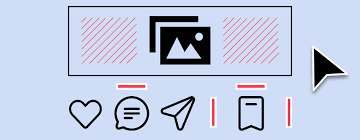
Auto Layout — аналог Flexbox. Включается через Shift + A. Элементы автоматически выравниваются, меняют размер при изменении контента.
2. Настройка направления, отступов, выравнивания
Direction, Justify, Align. Padding задаёт внутренние отступы. Gap — промежутки между элементами.
3. Fill container и Hug contents
Hug contents: размер по содержимому. Fill container: растягивается на всю ширину. Часто используют Fill по ширине, Hug по высоте.
4. Вложенные Auto Layout и адаптивность
Вложение позволяет создавать сложные интерфейсы. Wrap включает перенос строк (flex-wrap: wrap). При изменении ширины фрейма элементы с Fill растягиваются, с Hug — остаются.
🛠️ ПРАКТИКА 5. AUTO LAYOUT
- Создайте фрейм Desktop.
- 3 кнопки → Auto Layout, Horizontal, Gap 20px.
- Justify: Center, Space between.
- Вертикальный Auto Layout: заголовок, текст, кнопка. Gap 16px.
- Добавьте Padding 20px.
- Карточка товара: вертикальный AL, внутри изображение, заголовок, цена, кнопка (Fill по ширине).
- 3 карточки в ряд, Horizontal AL, Gap 24px.
- Измените ширину родителя, проверьте фиксированность карточек.
- Включите Wrap, проверьте перенос строк.
- Создайте «резиновую» кнопку с Hug contents.
- Проверьте изменение ширины при смене текста.
- Форма заказа: лейблы + поля ввода (Fill по ширине).
- Шапка сайта: логотип (Hug), навигация (Horizontal AL), кнопка (Hug). Justify: Space between.
- Добавьте аватар в шапку.
- Карточка новости с Fill по ширине, Hug по высоте.
- Компонент «ProgressBar» с Fill по ширине.
- Сетка 3×3 с Wrap и вложенными AL.
- Перестройте макет магазина на Auto Layout.
- Скопируйте CSS из Dev Mode.
🔗 ЛЕКЦИЯ 6. ПРОТОТИПИРОВАНИЕ И РЕСУРСЫ
1. Режим Prototype
Прототип — кликабельная модель. Режим Prototype позволяет создавать связи без изменения дизайна.
2. Триггеры и анимация
Триггеры: On Click, While Hover, After Delay, On Drag, Mouse Enter/Leave.
Анимация: Instant, Dissolve, Slide, Push, Smart Animate.
3. Настройка переходов
Slide: экран въезжает. Push: вытеснение. Smart Animate: плавная анимация изменений между одинаково названными элементами.
4. Публикация и тестирование
Кнопка «Present». Ссылка «Share» → «Prototype only» скрывает слои. Тестирование на телефоне через Figma Mirror.
5. Ресурсы и плагины
Community: UI Kits, иконки, шаблоны. Полезные плагины: Iconify, Unsplash, Content Reel, Contrast (доступность), Auto Layout Assistant.
🛠️ ПРАКТИКА 6. ПРОТОТИПИРОВАНИЕ И РЕСУРСЫ
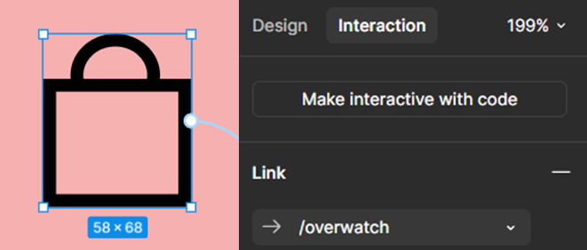
- Создайте два фрейма «Главная» и «Контакты».
- На «Главной» кнопка «Перейти в контакты».
- Свяжите кнопку с «Контакты» (On Click, Instant).
- На «Контакты» кнопка «Назад», анимация Slide → Left 300ms.
- Третий фрейм «О нас», навигация, Push-переходы.
- Выпадающее меню через Smart Animate (200ms).
- Прототип с Mouse Enter/Leave для карточки.
- Авто-слайдер (After Delay 3000ms, Dissolve).
- Модальное окно с On Click и Smart Animate.
- Экраны формы (ошибка/успех).
- Опубликуйте прототип (Prototype only).
- Найдите и дублируйте UI Kit из Community.
- Адаптируйте компоненты под свою палитру.
- Скопируйте иконки (Feather/Heroicons).
- Установите плагин Iconify, вставьте иконку.
- Unsplash: вставьте 3 изображения.
- Content Reel: текст, аватар, график.
- Contrast: проверьте доступность текста.
- Auto Layout Assistant: проанализируйте макет.
🛠️ ПРАКТИКА 7. ДИЗАЙН-СИСТЕМА В FIGMA
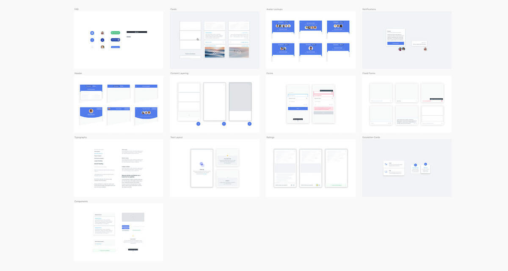
- Создайте новый файл Figma, назовите его «Дизайн-система бренда X».
- Создайте страницу «Стили». Разместите цветовую палитру из 12 цветов. Сохраните как Color Style.
- Создайте текстовые стили: h1 (48px), h2 (32px), h3 (24px), body-large (18px), body (16px), body-small (14px), caption (12px).
- Создайте страницу «Компоненты». Разместите мастер-компоненты.
- Компонент «Button» с вариантами: Primary, Secondary, Outline, Ghost. Состояния: Default, Hover, Disabled. Size: Small, Medium, Large.
- Компонент «Input» с вариантами: Text, Email, Password, Textarea. Состояния: Default, Focus, Error, Disabled.
- Компонент «Card» с вариантами: Horizontal, Vertical, With Image, Without Image.
- Компонент «Avatar» с вариантами: Size (XS, S, M, L, XL), Status (Online, Offline, Away).
- Компонент «Badge» с вариантами: Type (Primary, Secondary, Success, Error, Warning), Size (Small, Medium).
- Компонент «Modal» с вариантами: Size (Small, Medium, Large), Close Button (показать/скрыть).
- Создайте страницу «Сетки и отступы». Сетка Columns (12 колонок, Gutter 20px, Margin 40px), система отступов (4px, 8px, 16px, 24px, 32px, 48px, 64px).
- Создайте компонент «Spacing» — набор прямоугольников с разными отступами.
- Создайте компонент «IconButton» — круглая кнопка с иконкой. Варианты: размера (S, M, L) и состояния (Default, Hover, Disabled).
- Создайте компонент «Checkbox» с вариантами: Unchecked, Checked, Indeterminate, Disabled.
- Создайте компонент «Radio» с вариантами: Unchecked, Checked, Disabled.
- Создайте компонент «Switch» (переключатель) с вариантами: Off, On, Disabled.
- Создайте компонент «Tabs» — набор вкладок. Варианты: количество вкладок (2, 3, 4), активная вкладка.
- Создайте компонент «Tooltip» (подсказка) с вариантами: Position (Top, Bottom, Left, Right), Type (Default, Error, Success).
- Создайте страницу «Документация». Разместите: описание дизайн-системы, таблицу с цветами, примеры использования компонентов, правила именования CSS-классов.
- Опубликуйте дизайн-систему как библиотеку. Создайте новый тестовый файл и подключите библиотеку.
🛠️ ПРАКТИКА 8. ФИНАЛЬНЫЙ ПРОЕКТ: ПОРТФОЛИО ДИЗАЙНЕРА
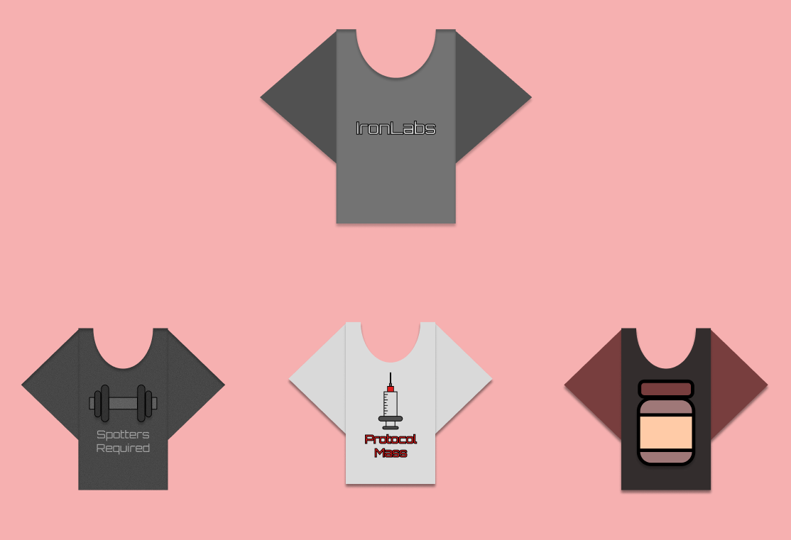
- Выберите тему проекта: Интернет-магазин, Социальная сеть, Дашборд, Сервис бронирования, Образовательная платформа.
- Создайте новый файл Figma «Финальный проект: [название]». Страницы: «Аналитика», «Вайрфреймы», «Дизайн Desktop», «Дизайн Tablet», «Дизайн Mobile», «Компоненты», «Прототип».
- На странице «Аналитика» соберите информацию: целевая аудитория, основные задачи пользователей, 5 конкурентов, список необходимых экранов (минимум 5).
- На странице «Вайрфреймы» создайте черно-белые схемы всех экранов. Используйте только прямоугольники и текст-заглушку.
- Создайте дизайн-систему внутри проекта: цветовая палитра (минимум 8 цветов), текстовые стили (h1, h2, h3, body, caption), сетка Columns для десктопа (12 колонок, Gutter 20px, Margin 40px), сетка для планшета (8 колонок) и мобилки (4 колонки).
- Создайте компоненты (каждый с вариантами Variants): Button, Input, Card, Navigation, Avatar.
- На странице «Дизайн Desktop» создайте главный экран. Используйте: Auto Layout для всех блоков, компоненты из вашей дизайн-системы, сетку Columns, изображения из Unsplash.
- На десктопном экране разместите: шапку с логотипом, навигацией и кнопкой входа, баннер (или секцию Hero), сетку из 6 карточек, подвал с контактами и ссылками.
- Создайте второй экран (каталог, профиль пользователя, детальная страница товара).
- Создайте третий экран (корзина, оформление заказа, форма подписки).
- Скопируйте контент экрана Desktop на страницы Tablet и Mobile. Адаптируйте для каждого разрешения: Tablet (2 колонки), Mobile (1 колонка, меню-бургер).
- Создайте прототип для Desktop-версии: соедините все экраны (минимум 3), используйте разные типы анимации: Push, Slide, Smart Animate, добавьте переходы с наведением (While Hover).
- Добавьте в прототип: при клике на кнопку «Купить» — всплывающее уведомление, при клике на карточку — переход на детальную страницу, при клике на иконку корзины — переход в корзину.
- Проверьте прототип в режиме презентации (Present).
- Опубликуйте прототип (Share → Copy link → Prototype only).
- Экспортируйте все иконки в SVG, изображения в PNG 2x.
- Включите Dev Mode и скопируйте CSS-свойства для кнопки, карточки, сетки карточек.
- Экспортируйте спецификации: Copy as CSS, сохраните CSS-код, экспортируйте цвета в HEX и CSS-переменные.
- Создайте страницу «Презентация» для портфолио: название проекта, скриншоты всех экранов, ссылка на прототип, ссылка на файл Figma.
- Подготовьте финальный отчёт: чек-лист, что получилось лучше всего, что можно улучшить, ссылка на портфолио.
✅ ИТОГОВЫЙ ТЕСТ
15 вопросов по всем 6 лекциям курса по Figma.